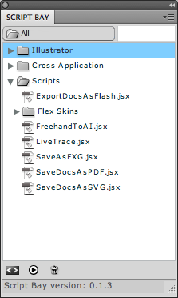
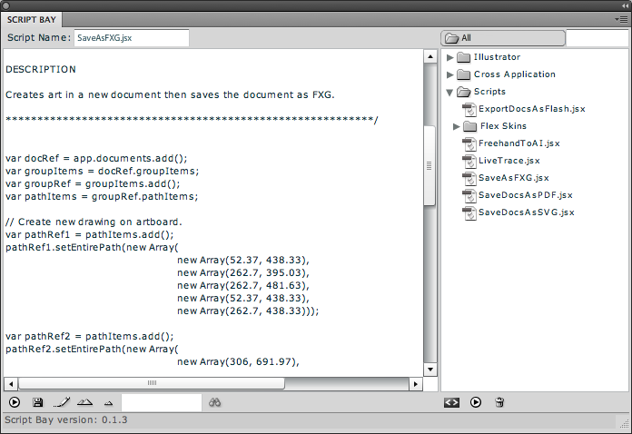

Бухта скриптов (Script Bay)
Sancho / 24.09.2010, 15:13/00:41
Форум:
По умолчанию в иллюстраторе скрипты можно запускать только из меню, что весьма неудобно. Решить эту проблему можно, установив дополнение Script Bay.

Как видно, это дополнительный докер с помощью которого можно запускать и редактировать скрипты из любых папок.

Это дополнение работает только под ЦС5 и устанавливается одновременно на InDesign, Photoshop и Illustrator.
Узнать подробнее а так же скачать, можно здесь.
© Copyright by Sancho
Запрещается копирование и публикация материала на других сайтах без письменного согласия автора.
No part of this story can be copied/pasted on any other website without the author's express written permission.
А, вообще, в чём сложность-то поиска во всяких гуглах?